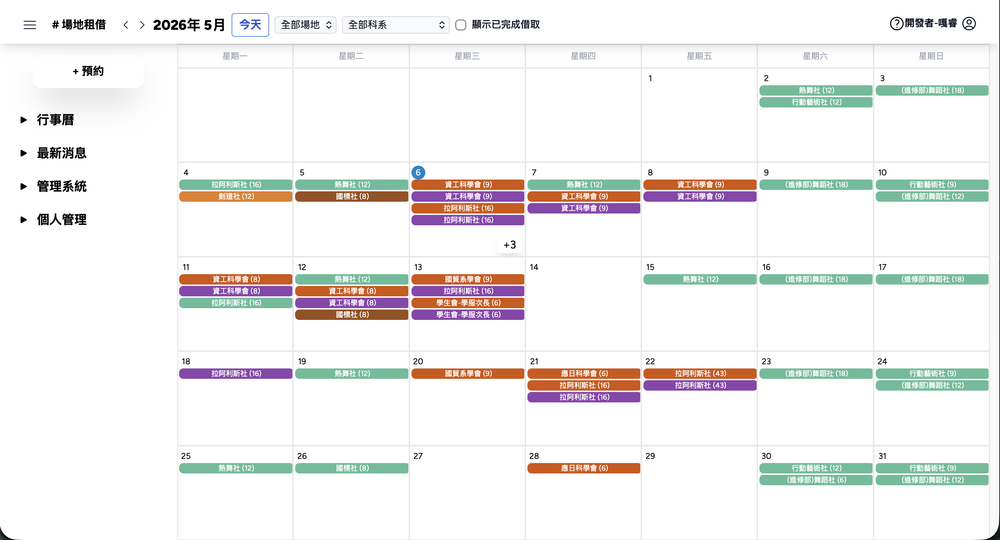
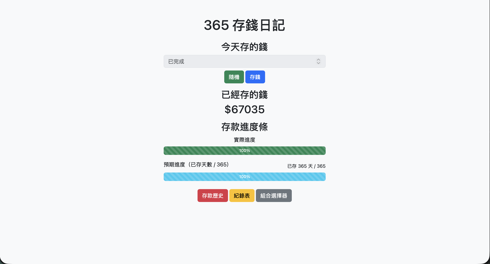

畢業專題以建置一套「線上題庫管理與測驗系統」為目標，採用 FastAPI 作為後端框架，搭配 MySQL 資料庫與 HTML、JavaScript 前端技術進行開發。
系統已完成題庫管理、題目分類、線上作答、自動批改及答題紀錄分析等核心功能，並可透過 API 串接實現資料動態更新。
在實作過程中，我負責系統架構設計、專案任務分配與後端 API 開發，包含題目資料的 CRUD 操作、答題紀錄儲存與分析功能，
並優化前後端資料傳遞流程，使系統具備良好的擴充性與維護性。此外，亦設計答題回顧介面，透過視覺化方式呈現作答結果，提升學習效率。
本系統目前已完成多個單元題庫建置，並能穩定運作，具備實際應用於教學輔助與自主學習之價值。 透過本專題，我不僅強化了全端開發能力，也培養了解決問題與系統整合的實務經驗。
P.8
06 · PORTFOLIO
作品集
臺中科技大學校園場地租借系統-ezBorrow

作品說明、介紹與心得
ezBorrow 為一套場地租借管理系統，旨在解決校園場地借用流程繁瑣與資訊不透明的問題。
系統採用 FastAPI 與 MySQL 建構後端及資料庫，並結合 LINE Bot 提供借用狀態通知，如審核結果與使用回報提醒。
用戶端功能包含場地管理、借用申請、時段衝突判斷與紀錄查詢，管理員端功能更包含了線上設定各場地資訊（開放借用時段、場地可用性等），
並透過 API 實現資料同步。
開發過程中，我負責網頁後端開發與資料庫設計，並整合 LINE Bot 與 Web 技術。
透過解決時段判斷與資料處理等問題，提升系統穩定性與效能。 在這次專案中讓我強化系統開發與整合能力，並深化對使用者需求的理解。※ 本系統獲國立臺中科技大學學生會實際採用，詳見「附件六：ezBorrow 開發感謝狀」。
P.9
06 · PORTFOLIO
作品集
365存錢紀錄網

作品說明、介紹與心得
365存錢網為我因實際儲蓄需求所開發之系統。由於市面上缺乏能支援隨機產生 1~365 不重複數字、並即時顯示存錢狀態與進度的工具，因此我自行設計並實作此平台。
系統採用 FastAPI 與 MySQL 建構，能記錄每日存入金額與日期，並透過表格呈現完成狀態，結合進度條比較預期與實際儲蓄進度。
本專題由我獨立完成全端開發，包含隨機演算法設計、資料庫規劃與前端互動呈現。最終結果也成功持續存完365天
透過本次實作，我強化了系統設計與資料處理能力，並學習從使用者需求出發，開發具實務性的應用系統。